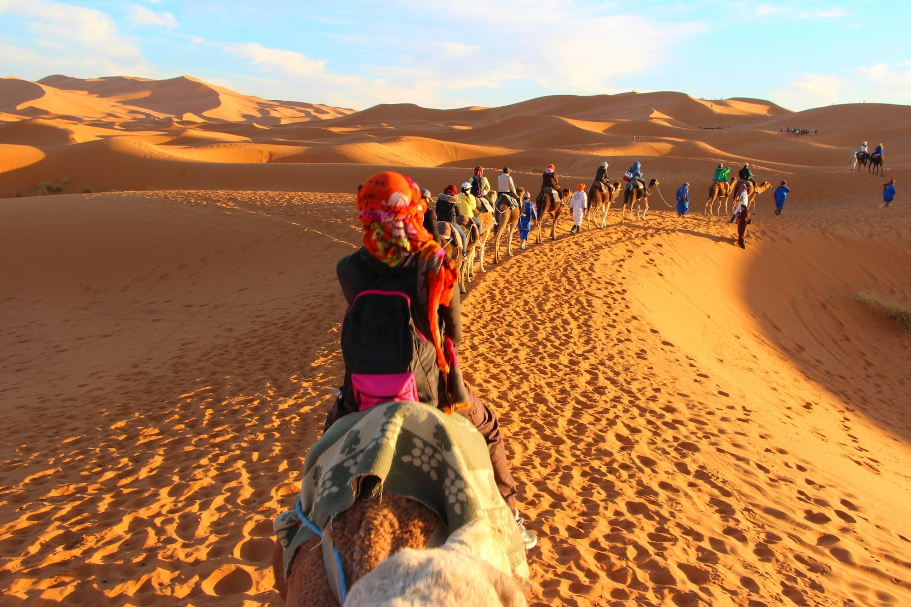
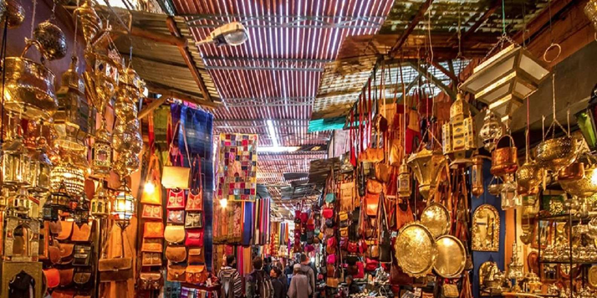

Le quad à Tétouan, au Maroc, offre une aventure unique entre mer et montagnes. Les circuits permettent de découvrir les plages méditerranéennes, les sentiers du Rif, et des villages berbères authentiques. Encadrée par des guides locaux, l’activité est accessible à tous niveaux, avec des équipements modernes et un briefing sécurité. Idéal pour explorer des paysages variés et vivre une montée d’adrénaline au cœur de la nature.
Excursion dans le désert du Sahara:
Le désert du Sahara est l'une des expériences les plus mémorables au Maroc. Partir en excursion à dos de chameau à travers les dunes géantes est magique, surtout lors du coucher du soleil ou de l'aube. Les visiteurs peuvent séjourner dans des bivouacs traditionnels berbères et passer la nuit à la belle étoile, loin de toute pollution lumineuse. Certaines excursions incluent aussi des visites de ksour (villages fortifiés) et des oasis, où tu peux découvrir la culture nomade et l'hospitalité des habitants.
Visite de Fès et de sa médina historique:
Fès, l'une des plus anciennes villes impériales du Maroc, abrite une médina classée au patrimoine mondial de l'UNESCO, célébre pour ses ruelles étroites, ses mosquées, et ses écoles coraniques. La médina de Fès est l'une des plus grandes zones piétonnes du monde. Tu pourras visiter la célèbre tannerie Chouara, où le cuir est encore tanné de manière traditionnelle, ou la médersa Bou Inania, une école coranique magnifique datant du XIVe siècle. C'est un véritable voyage dans le temps, où l'histoire et la culture du Maroc se rencontrent.